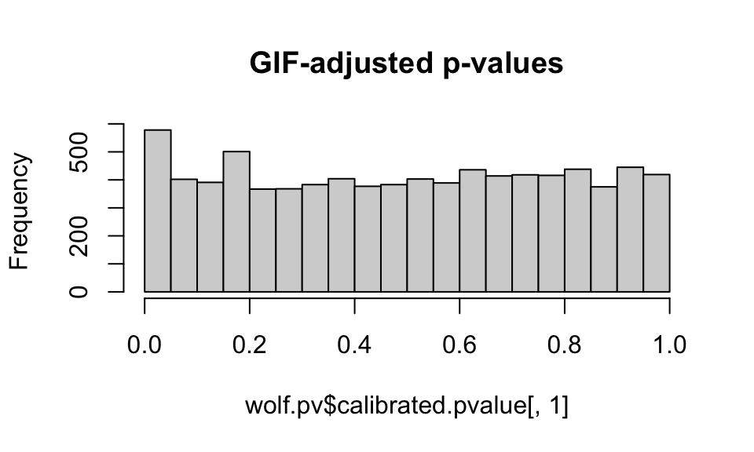
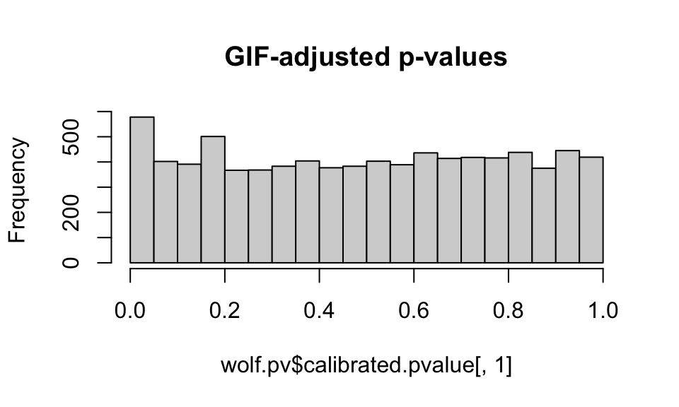
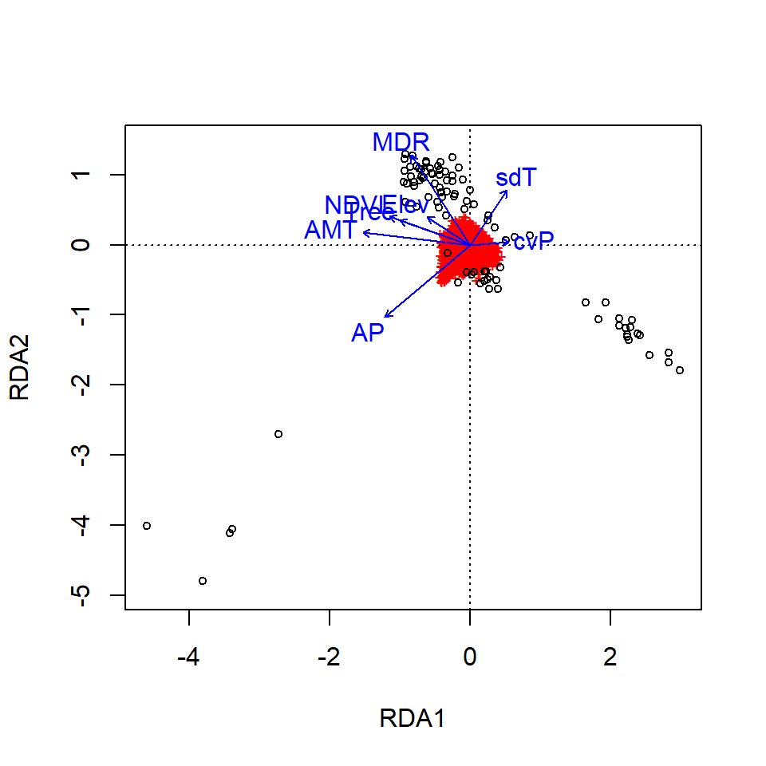
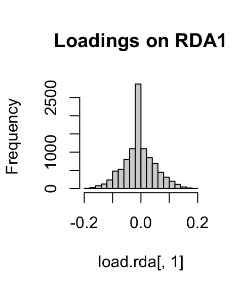
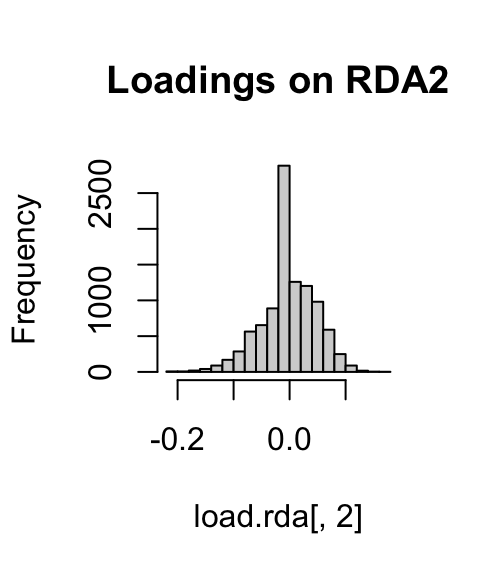

13.1 Worked Example
Brenna R. Forester
1. Overview of Worked Example
a. Goals
This worked example will illustrate the use of two types of genotype-environment association analyses, one univariate and one multivariate. Specifically, you will learn:
- Strategies for screening and preparing predictor variables for different GEA analyses;
- How to run and interpret a Latent Factor Mixed Model (LFMM);
- One option for post-processing LFMM results using the genomic inflation factor (GIF) and false discovery rate (FDR) to correct for multiple tests;
- How to run and interpret Redundancy Analysis for GEA.
b. Data set
We will reanalyze genomic data from 94 North American gray wolves (Canis lupus) sampled across Canada and Alaska (Schweizer et al., 2016). We are interested in understanding how wolves may be locally adapted to environmental conditions across their North American range.
The genetic data are individual-based, and are input as allele counts (i.e. 0/1/2) for each locus. In the interest of computational efficiency, we will use a randomly sampled subset of 10,000 single nucleotide polymorphism (SNP) markers from the full data set (which contains 42,587 SNPs).
In addition, we have eight environmental predictors that are ecologically relevant and are not highly correlated (|r| < 0.7). This is a reduced set of predictors from the 12 originally included by Schweizer et al. (2016).
c. Required R libraries
You may need to install packages qvalue from BioClim and lfmm from GitHub:
2. Import and prepare the data
a. Import the genetic data
I downloaded these data from the Schweizer et al. (2016) Dryad repository and converted them from .tped to .raw format using plink (Purcell et al., 2007). Then, using the R package adegenet (Jombart 2008), I read in the .raw data and extracted the matrix of 94 individuals x 42,587 SNPs. Finally, I randomly sampled 10,000 columns (SNPs) from the full data set, which is what we will analyze in this worked example.
The full data in .raw format are available in the Supplemental Information for Forester et al. (2018). If you want to analyze the full data set, use the read.PLINK call from adegenet to read the data into R.
gen <- read.csv(system.file("extdata", "wolf_geno_samp_10000.csv", package = "LandGenCourse"), row.names=1)
dim(gen)## [1] 94 10000We have 94 individuals (rows) genotyped at 10,000 SNPs (columns).
Both LFMM and RDA require complete data frames (i.e., no missing genetic data). For this example, we’ll use a simple approach to imputing missing genotype values: we will impute using the most common genotype at each SNP across all individuals.
## [1] 27987gen.imp <- apply(gen, 2, function(x) replace(x, is.na(x), as.numeric(names(which.max(table(x))))))
sum(is.na(gen.imp)) # No NAs## [1] 0We could also use this imputation approach within ecotypes (rather than across all individuals). Other promising imputation methods for species lacking a reference genome include: using ancestry values from snmf in the LEA package (Frichot & Francois 2015), and the program LinkImpute (Money et al., 2015).
b. Import the environmental data
The original data set comes with 12 predictors, but many of them are highly correlated, which can cause problems for regression-based methods like LFMM and RDA. I conducted variable reduction using the |0.7| “rule of thumb” (Dormann et al., 2013) and an ecological interpretation of the relevance of possible predictors. Can you double check the correlations among the variables?
For more information on the rationale for variable reduction, see the full RDA vignette.
env <- read.csv(system.file("extdata", "EnvironmentalData_8pred.csv", package = "LandGenCourse"))
str(env) # Look at the structure of the data frame## 'data.frame': 94 obs. of 12 variables:
## $ individual : chr "11226.CEL" "11228.CEL" "11232_CLU_NQUE-I" "11234_CLU_NQUE-I" ...
## $ ecotype : chr "Pop_2_BorealForest" "Pop_6_AtlanticForest" "Pop_6_AtlanticForest" "Pop_6_AtlanticForest" ...
## $ long : num -94.5 -88.1 -72 -72 -114.8 ...
## $ lat : num 49.8 49.1 58.8 58.6 60.6 ...
## $ ann_mean_temp : int 23 15 -69 -66 -34 -37 -35 -47 -46 -20 ...
## $ mean_diurnal_range: int 97 115 75 76 102 114 112 99 109 115 ...
## $ temp_seasonality : int 13047 11408 11831 11867 14259 14806 15176 15844 15312 14099 ...
## $ ann_precip : int 610 784 483 477 335 319 372 339 284 375 ...
## $ precip_seasonality: int 47 29 39 40 39 34 43 48 36 46 ...
## $ ndvi : int 7403 8222 6450 6141 7595 7518 7472 8157 7348 6616 ...
## $ elev : int 349 234 264 200 194 219 280 154 190 222 ...
## $ percent_tree_cover: int 36 51 5 9 26 48 47 61 61 47 ...env$individual <- as.character(env$individual) # Make individual names characters (not factors)
# Confirm that genotypes and environmental data are in the same order
identical(rownames(gen.imp), env[,1]) ## [1] TRUENow we’ll subset just the environmental predictors & shorten their names:
For the univariate LFMM test, we could run a separate set of tests for each of these eight predictors; this would be a test for each of the 10,000 SNPs with each predictor = 80,000 tests (!). Instead, for LFMM, we’ll perform a PCA on the environmental predictors and use the first principal component (PC) as a synthetic predictor. This will reduce our ability to interpret the output, since the PC predictor will be a linear combination of the original eight variables, but it will reduce the number of corrections needed for multiple tests. Your decision of how to handle multiple predictors for a univarate GEA test will depend on the study goals and characteristics of the data set.
There are many ways to run PCA in R; we’ll use the rda function in vegan (Oksanen et al., 2016). We’ll center and scale the predictors (scale=T), since they’re in different units. We’ll then determine the proportion of the environmental variance explained by each PC axis & investigate how the original predictors correlate with the first PC axis.
## $importance
## Importance of components:
## PC1 PC2 PC3 PC4 PC5 PC6 PC7
## Eigenvalue 3.224 1.8354 1.1258 0.70269 0.48967 0.34983 0.21138
## Proportion Explained 0.403 0.2294 0.1407 0.08784 0.06121 0.04373 0.02642
## Cumulative Proportion 0.403 0.6324 0.7731 0.86096 0.92217 0.96590 0.99232
## PC8
## Eigenvalue 0.061457
## Proportion Explained 0.007682
## Cumulative Proportion 1.000000
## c.rrelations between the PC axis and predictors:
round(scores(pred.pca, choices=1:8, display="species", scaling=0), digits=3)## PC1 PC2 PC3 PC4 PC5 PC6 PC7 PC8
## AMT -0.519 0.029 -0.040 0.198 -0.091 0.297 0.436 -0.634
## MDR -0.315 -0.531 0.258 -0.051 -0.190 0.259 0.332 0.579
## sdT 0.193 -0.586 -0.225 -0.203 0.340 -0.464 0.372 -0.244
## AP -0.353 0.468 -0.071 0.212 0.228 -0.516 0.387 0.372
## cvP 0.319 -0.219 0.070 0.888 -0.199 -0.130 0.033 -0.007
## NDVI -0.404 -0.253 -0.220 0.281 0.618 0.161 -0.481 0.077
## Elev -0.150 -0.054 0.876 -0.029 0.174 -0.301 -0.178 -0.231
## Tree -0.426 -0.200 -0.233 -0.064 -0.580 -0.480 -0.385 -0.071
## attr(,"const")
## [1] 5.22267840% of the variance in the predictors is explained by the first PC axis, and 23% by the second axis. We could follow up with an LFMM model using the second axis as a predictor, if we wanted. The strongest correlations with PC1 are annual mean temperature (AMT), tree cover (Tree), NDVI, and annual precipitation (AP).
We’ll store our synthetic PC axis predictor as pred.PC1 for use in LFMM.
3. Latent Factor Mixed Models (LFMM): a univariate GEA
LFMM is a univariate test, which means that it builds a model for each SNP and each predictor variable. In this case, we will run 10,000 SNPs x 1 synthetic predictor = 10,000 separate LFMM tests.
a. Determine K
LFMM requires an estimate of the number of populations in the data (K). To determine the most likely value of K, we’ll use PCA, noting that there are many different approaches for determining “K” from genetic data (more below). It is also reasonable to run LFMM with different values of K, if there is uncertainty.
We’ll use a broken stick criterion to determine K. The broken stick stopping rule states that principal components should be retained as long as observed eigenvalues are higher than corresponding random broken stick components.
For example, if we reran the environmental PCA screeplot from above with a broken stick criterion:
screeplot(pred.pca, main = "Screeplot of Wolf Predictor Variables with Broken Stick", bstick=TRUE, type="barplot")
You can see that PC1 and PC2 explain more than the random broken stick components, while PC3 + do not. If this were genomic data, and we were determining a value of K using this approach, we’d set K = 3.
Now let’s run a PCA with the genommic data and plot the eigenvalues with the broken stick criterion:
gen.pca <- rda(gen.imp, scale=T)
screeplot(gen.pca, main = "Screeplot of Genetic Data with Broken Stick", bstick=TRUE, type="barplot")
For the genomic data, we can see that none of the PCs have eigenvalues greater than random (greater than the broken stick values in red). This effectively means that K=1 for the wolf data set, based on a PCA assessment. [Note that we see a similar result using the full genomic data set of 42K SNPs]. This does not mean there isn’t genetic structure in the data; it just means the structure isn’t particularly strong and/or easily partitioned into discrete groupings.
In the original paper, the authors determined K using Structure. They found support for multiple K values between 3 and 7. The wolf data show an isolation by distance signature, which can confound methods used to identify K and contribute to uncertainty. How do you suspect that differences in K (say K=1 vs. K=3) for LFMM might influence the GEA results?
For now, we’ll use K=3 following the original manuscript. It would be interesting to compare K=1 to these results, if you have time. Note that with K=1, LFMM is essentially running a simple linear regression (i.e., no latent factors).
b. Run LFMM
LFMM is a regression model that includes unobserved variables (latent factors, set with “K”) that correct the model for confounding effects, such as population structure. The latent factors are estimated simultaneously with the environmental and response variables, which can help improve power when environment and demography are correlated.
The previous version of LFMM (v1.5, implemented in the LEA package) uses an MCMC (Markov chain Monte Carlo) algorithm to identify GEAs while correcting for confounding. MCMC made it (very!) time-intensive for large data sets. LFMM v.2 computes LFMMs for GEA using a least-squares estimation method that is substantially faster than v1.5 (Caye et al., 2019). There are two penalty approaches: ridge and lasso. We’ll use ridge today (see ?lfmm_ridge); see Jumentier et al. (2020) for more information on the ridge vs. lasso penalties.
That was fast! As you’ll see, post-processing these results is what takes up most of our time and effort…
c. Identify LFMM candidates using False Discovery Rate
Next, we post-process the model output. We will move fast here; I strongly recommend reading “Controlling false discoveries in genome scans for selection” (Francois et al., 2016) if you will be running these post-processing steps on your own data! Decisions made here can dramatically impact the candidate markers you identify.
The steps for post-processing are:
- Look at the genomic inflation factor (GIF), which gives us a sense for how well the model has accounted for confounding factors in the data.
- Plot the p-values to see how application of the GIF influences the p-value distribution.
- Modify the GIF (if needed) and re-plot the p-values to identify the best possible fit to the “ideal” p-value distribution.
- Apply a False Discovery Rate control method to the p-values by converting to q-values.
- Identify candidates as those below a given FDR threshold.
The False Discovery Rate is the expected proportion of false positives among the list of positive tests (see Storey and Tibshirani, 2003).
An essential point to understand here is that the FDR is predicated on the “ideal” p-value distribution (flat with a peak at 0, see Francois et al. 2016).
For example, an FDR threshold of 0.10 applied to a dataset with an ideal p-value distribution would produce 10% false positives (aka false discoveries) among the set of positive tests. However, if the p-value distribution deviates from the ideal, this same FDR threshold of 0.10 would produce more or fewer false discoveries among the set of postive tests, depending on the skew in the p-value distribution.
So remember: having an actual FDR that is in accordance with the nominal threshold you set is completely dependent on the p-values used.
The lfmm package has a nice built-in function to calculate test statistics for the predictor(s), see ?lfmm_test:
wolf.pv <- lfmm_test(Y=gen.imp, X=pred.PC1, lfmm=wolf.lfmm, calibrate="gif")
names(wolf.pv) # this object includes raw z-scores and p-values, as well as GIF-calibrated scores and p-values## [1] "B" "epsilon.sigma2" "B.sigma2"
## [4] "score" "pvalue" "gif"
## [7] "calibrated.score2" "calibrated.pvalue"Let’s look at the genomic inflation factor (GIF):
## PC1
## 2.772992An appropriately calibrated set of tests will have a GIF of around 1. The elevated GIF for our tests indicates that the results may be overly liberal in identifying candidate SNPs. If the GIF is less than one, the test may be too conservative.
NOTE: Changing the value of K influences the GIF, so additional tests using the “best” value of K +/- 1 may be needed in some cases. See Francois et al. (2016) for more details.
Let’s look at how application of the GIF to the p-values impacts the p-value distribution:
hist(wolf.pv$pvalue[,1], main="Unadjusted p-values")
hist(wolf.pv$calibrated.pvalue[,1], main="GIF-adjusted p-values") 

We want to see a relatively flat histogram (most loci not under selection) with a peak near zero, indicating candidate adaptive markers. We see a very large peak with the unadjusted p-values, and a much smaller peak with the GIF-adjusted p-values (note differences in the scale of the y-axis).
Note that you can choose a different GIF and readjust the p-values to get a “better” histogram distribution (that is, a distribution that conforms best with what is expected under a well-calibrated set of models, see Francois et al, 2016). This process is subjective and can be difficult with empirical data sets, especially those with an IBD signature, such as these wolf data. Remember, you can also change the value of K in your lfmm models and see how this impacts the GIF.
Below I’ll show you how to manually adjust the GIF correction factor:
# Let's change the GIF and readjust the p-values:
zscore <- wolf.pv$score[,1] # zscores for first predictor, we only have one in our case...
(gif <- wolf.pv$gif[1]) ## d.fault GIF for this predictor## PC1
## 2.772992new.gif1 <- 2.0 ## c.oose your new GIF
# Manual adjustment of the p-values:
adj.pv1 <- pchisq(zscore^2/new.gif1, df=1, lower = FALSE)Plot the p-value histograms:
hist(wolf.pv$pvalue[,1], main="Unadjusted p-values")
hist(wolf.pv$calibrated.pvalue[,1], main="GIF-adjusted p-values (GIF=2.8)")
hist(adj.pv1, main="REadjusted p-values (GIF=2.0)")


For now, we’ll stick with the default GIF calculated by the lfmm package, though it looks like the application of the GIF may be a bit conservative (e.g. it is compressing the peak at 0).
Finally, we convert the adjusted p-values to q-values. q-values provide a measure of each SNP’s significance, automatically taking into account the fact that thousands are simultaneously being tested. We can then use an FDR threshold to control the number of false positive detections (given that our p-value distribution is “well-behaved”).
wolf.qv <- qvalue(wolf.pv$calibrated.pvalue)$qvalues
length(which(wolf.qv < 0.1)) ## h.w many SNPs have an FDR < 10%?## [1] 12## [1] "chr6.36999927" "chr20.36354466" "chr17.54224832" "chr12.58928631"
## [5] "chr12.55629962" "chr8.41109194" "chr19.17640345" "chr8.63918041"
## [9] "chr20.10469494" "chr22.64010061" "chr5.25188969" "chr9.36496633"Using K=3, the default GIF correction, and an FDR threshold of 0.10, we only detect 12 candidate SNPs under selection in response to our PC1 environmental predictor. What changes could we make to have a less conservative test?
4. Redundancy Analysis (RDA): a multivariate GEA
a. Run RDA
RDA is a multivariate ordination technique that can analyze many loci and environmental predictors simultaneously. For this reason, we can input all of the SNPs and environmental predictors at once, with no need to correct for multiple tests. RDA determines how groups of loci covary in response to the multivariate environment, and can better detect processes that result in weak, multilocus molecular signatures relative to univariate tests (Rellstab et al., 2015; Forester et al., 2018).
RDA can be used on both individual and population-based sampling designs. The distinction between the two may not be straightforward in all cases. A simple guideline would be to use an individual-based framework when you have individual coordinates for most of your samples, and the resolution of your environmental data would allow for a sampling of environmental conditions across the site/study area. For population-level data, you would input the genetic data as allele frequencies within demes.
The code to run the RDA is simple. However, I highly recommend reading Borcard et al. (2011) for details on the implementation and interpretation of RDA models and the objects created by vegan. RDA runs relatively quickly on most data sets, though you may need a high memory node on a cluster for very large data sets (i.e., millions of SNPs).
##
## Call: rda(formula = gen.imp ~ AMT + MDR + sdT + AP + cvP + NDVI + Elev +
## Tree, data = pred, scale = T)
##
## Inertia Proportion Rank
## Total 8307.000 1.000
## Constrained 1113.488 0.134 8
## Unconstrained 7193.512 0.866 85
##
## Inertia is correlations
##
## Eigenvalues for constrained axes:
## RDA1 RDA2 RDA3 RDA4 RDA5 RDA6 RDA7 RDA8
## 281.19 216.87 179.53 110.84 89.78 87.15 75.93 72.20
##
## Eigenvalues for unconstrained axes:
## PC1 PC2 PC3 PC4 PC5 PC6 PC7 PC8
## 261.51 211.68 197.60 171.80 127.67 121.61 115.54 110.04
## (Showing 8 of 85 unconstrained eigenvalues)First, note that we will have as many constrained (“RDA”) axes as we have predictors in the model. All residual variance is then modeled by PCA (the unconstrained “PC” axes). The proportion of the variance explained by the environmental predictors is given under the “Proportion” column for “Constrained”; this is equivalent to the R2 of a multiple regression. Just like in multiple regression, this R2 will be biased and should be adjusted based on the number of predictors. We can calculate the adjusted R2 using:
## $r.squared
## [1] 0.1340421
##
## $adj.r.squared
## [1] 0.05254019Our constrained ordination explains about 5% of the variation; this low explanatory power is not surprising given that we expect that most of the SNPs in our dataset will not show a relationship with the environmental predictors (e.g., most SNPs will be neutral).
The eigenvalues for the constrained axes reflect the variance explained by each canonical axis:
## $importance
## Importance of components:
## RDA1 RDA2 RDA3 RDA4 RDA5 RDA6
## Eigenvalue 281.1906 216.8651 179.5282 110.84337 89.78143 87.14904
## Proportion Explained 0.2525 0.1948 0.1612 0.09955 0.08063 0.07827
## Cumulative Proportion 0.2525 0.4473 0.6085 0.70807 0.78870 0.86697
## RDA7 RDA8
## Eigenvalue 75.92523 72.20485
## Proportion Explained 0.06819 0.06485
## Cumulative Proportion 0.93515 1.00000We can visualize this information using a screeplot of the canonical eigenvalues by calling screeplot:

Here, we can see that the first three constrained axes explain most of the variance. The screeplot provides an informal (and quick) way to determine how many constrained axes to include when we search for candidate SNPs (below). We could start by investigating RDA axes that explain the most variance (excluding those after the “drop off” point in the screeplot.)
You can run a formal test of statistical significance of each constrained axis using: anova.cca(wolf.rda, by="axis"). We can assess both the full model and each constrained axis using F-statistics (Legendre et al, 2010). The null hypothesis is that no linear relationship exists between the SNP data and the environmental predictors. See ?anova.cca for more details and options. The screeplot and a formal test (by axis) are both reasonable approaches for determining which RDA axes to assess for candidate SNPs.
The permutation process to test the signficiance of each axis takes a while (up to a few hours on large data sets), so we’ll just use the screeplot for a first assessment. If we did run the formal test, we would find that the first three constrained axes are significant (p = 0.001); constrained axis 4 has a p-value of 0.080, while axes 5-8 have p-values > 0.850. This corresponds with our evaluation of the screeplot, above.
Finally, vegan has a simple function for checking Variance Inflation Factors for the predictor variables used in the model. This helps identify redundant predictors:
## AMT MDR sdT AP cvP NDVI Elev Tree
## 7.854243 6.495892 2.775059 4.051610 1.318631 2.285632 2.028377 2.260139All values are below 10, and most are below 5, which indicates that multicollinearity among these predictors shouldn’t be a problem (Zuur et al., 2010).
Let’s make a quick plot of the RDA output using the default plotting in vegan:

Here, the SNPs are in red (in the center of each plot), and the individuals are the black circles. The blue vectors are the environmental predictors. The relative arrangement of these items in the ordination space reflects their relationship with the ordination axes, which are linear combinations of the predictor variables.
See the full RDA vignette for details on how to make more informative (and prettier!) RDA plots for this data set. For example, we could more clearly visualize the identified candidate loci in the ordination space and see how they are linked to the environmental predictors. We could also use RDA to investigate how wolf ecotypes (based on individual genotypes) are distributed in relation to the environmental predictors (Forester et al., 2018, Figures 9 & 10).
b. Identify RDA candidates
We’ll use the loadings of the SNPs (their location) in the ordination space to determine which SNPs are candidates for local adaptation. The SNP loadings are stored as species in the RDA object. We’ll extract the SNP loadings from the first three constrained axes, based on our assessment of the screeplot above.
If we look at histograms of the loadings on each RDA axis, we can see their (relatively normal) distribution. SNPs loading at the center of the distribution are not showing a relationship with the environmental predictors; those loading in the tails are, and are more likely to be under selection as a function of those predictors (or some other predictor correlated with them).
hist(load.rda[,1], main="Loadings on RDA1")
hist(load.rda[,2], main="Loadings on RDA2")
hist(load.rda[,3], main="Loadings on RDA3") 
I’ve written a simple function to identify SNPs that load in the tails of these distributions. We’ll start with a 3 standard deviation cutoff (two-tailed p-value = 0.0027). As with all cutoffs, this can be modified to reflect the goals of the analysis and our tolerance for true positives vs. false positives. For example, if you needed to be very conservative and only identify those loci under very strong selection (i.e., minimize false positive rates), you could increase the number of standard deviations to 3.5 (two-tailed p-value = 0.0005). This would also increase the false negative rate. If you were less concerned with false positives, and more concerned with identifying as many potential candidate loci as possible (including those that may be under weaker selection), you might choose a 2.5 standard deviation cutoff (two-tailed p-value = 0.012).
I define the function here as outliers, where x is the vector of loadings and z is the number of standard deviations to use:
outliers <- function(x,z){
lims <- mean(x) + c(-1, 1) * z * sd(x) ## f.nd loadings +/- z SD from mean loading
x[x < lims[1] | x > lims[2]] # locus names in these tails
}Now let’s apply it to the first three constrained axes:
cand1 <- outliers(load.rda[,1], 3) ## 3.
cand2 <- outliers(load.rda[,2], 3) ## 6.
cand3 <- outliers(load.rda[,3], 3) ## 3.
wolf.rda.cand <- c(names(cand1), names(cand2), names(cand3)) ## j.st the names of the candidates
length(wolf.rda.cand[duplicated(wolf.rda.cand)]) ## 7.duplicate detections (detected on multiple RDA axes)## [1] 7Let’s see where these candidate SNPs are in the ordination space. We’ll zoom the plot in to just the SNPs, and color code candidate SNPs in red:
# Set up the color scheme for plotting:
bgcol <- ifelse(colnames(gen.imp) %in% wolf.rda.cand, 'gray32', '#00000000')
snpcol <- ifelse(colnames(gen.imp) %in% wolf.rda.cand, 'red', '#00000000')
## a.es 1 & 2 - zooming in to just the SNPs here...
plot(wolf.rda, type="n", scaling=3, xlim=c(-1,1), ylim=c(-1,1), main="Wolf RDA, axes 1 and 2")
points(wolf.rda, display="species", pch=21, cex=1, col="gray32", bg='#f1eef6', scaling=3)
points(wolf.rda, display="species", pch=21, cex=1, col=bgcol, bg=snpcol, scaling=3)
text(wolf.rda, scaling=3, display="bp", col="#0868ac", cex=1)
## a.es 2 & 3
plot(wolf.rda, type="n", scaling=3, xlim=c(-1,1), ylim=c(-1,1), choices=c(2,3), main="Wolf RDA, axes 2 and 3")
points(wolf.rda, display="species", pch=21, cex=1, col="gray32", bg='#f1eef6', scaling=3, choices=c(2,3))
points(wolf.rda, display="species", pch=21, cex=1, col=bgcol, bg=snpcol, scaling=3, choices=c(2,3))
text(wolf.rda, scaling=3, display="bp", col="#0868ac", cex=1, choices=c(2,3))

Which environmental predictor(s) seem to be most strongly related to candidate SNPs in the RDA1/RDA2 plot? How about the RDA2/RDA3 plot?
Why do we see candidate SNPs loading in the center of the ordination space in both plots?
Let’s see which environmental predictors are most strongly correlated with the first three RDA axes:
## RDA1 RDA2 RDA3
## AMT -0.8692103 0.10797423 0.19767975
## MDR -0.4791404 0.77837759 -0.09163633
## sdT 0.2971194 0.47503944 -0.03234453
## AP -0.6902664 -0.62757476 0.09806042
## cvP 0.3155829 0.02749876 -0.64084267
## NDVI -0.6531881 0.24697034 0.07226876
## Elev -0.3473015 0.24167932 -0.33073363
## Tree -0.5699345 0.21080592 0.03478928Generally, candidate SNPs on axis 1 represent multilocus sets of SNP genotypes associated most strongly with annual mean temperature and annual precipitation; SNPs on axis 2 represent genotypes associated with mean diurnal range; and SNPs on axis 3 represent genotypes associated with precipitation seasonality. See the full RDA vignette for additional investigation of candidate SNPs.
5. Compare LFMM and RDA candidates
Let’s see what kind of overlap we have in our candidates from the two methods. Remember that we had only 12 candidates for LFMM and 134 candidates for RDA.
## [1] "chr6.36999927" "chr20.36354466" "chr17.54224832" "chr12.58928631"
## [5] "chr12.55629962" "chr8.41109194" "chr19.17640345" "chr8.63918041"
## [9] "chr20.10469494" "chr22.64010061" "chr9.36496633"## [1] "chr5.25188969"We see a lot of overlap, even though the tests differ (e.g., correction for population structure, univariate vs. multivariate tests, differences in predictor variables, differences in post-processing).
An important note: A common approach in studies that use GEAs and populations differentiation methods is to use many tests and then look for the overlap across the detections. This can be helpful for some questions (e.g. where minimizing false positive detections is of greatest importance), but can be overly conservative in many cases and bias detections against weaker signatures of selection. See our paper for an investigation of different approaches for combining detections & how it impacts true and false positive rates: Forester et al. (2018); and see the (excellent!) FDR paper for more options based on combining z-scores across different tests: Francois et al. (2016).
6. A quick note on controlling for population structure in RDA
We are still testing approaches to controlling for population structure in RDA. We’ve generally found that using ancestry values (e.g. from snmf or Admixture) or MEMs (Moran’s Eigenvector Maps, aka spatial eigenvectors) is overly conservative.
So far, the best approach (e.g. balancing true positives and false negatives) is to compute a PCA of the genetic data and select relevant PCs (e.g. using the broken stick criteron as we did above), then use retained PCs in a partial RDA:
?rda ## h.lp for running RDA
# pseudo code for simple RDA:
foo <- rda(genomic.data ~ predictor1 + predictor2, data=dat, scale=T)
# pseudo code for partial RDA (correcting for population structure with PCs):
bar <- rda(genomic.data ~ predictor1 + predictor2 + Condition(PC1), data=dat, scale=T)You will want to check for correlations between retained PCs and your environmental predictors. If environment and population structure are not correlated, you can retain all predictors and PCs and proceed with your partial RDA. If environment and population structure are highly correlated, you’ll have to decide whether to prune correlated environmental variables or PCs. Pruning environmental variables will likely reduce false positives but will also increase false negatives. Pruning PCs (instead of environmental predictors) will likely increase false positives, but will also reduce false negatives. These trade-offs exist with all approaches for controlling population structure and other confounding factors when environment is correlated with population structure.
7. References
Borcard D, Gillet F, Legendre P (2011) Numerical Ecology with R. Springer, New York.
Caye K, Jumentier B, Lepeule J, Francois O (2019) LFMM 2: Fast and Accurate Inference of Gene-Environment Associations in Genome-Wide Studies. Molecular Biology and Evolution 36: 852-860.
Dormann CF, Elith J, Bacher S, et al. (2013) Collinearity: a review of methods to deal with it and a simulation study evaluating their performance. Ecography, 36: 27-46.
Forester BR, Lasky JR, Wagner HH, Urban DL (2018) Comparing methods for detecting multilocus adaptation with multivariate genotype-environment associations. Molecular Ecology.
Forester BR (2018) Vignette: Detectingn multilocus adaptation using Redundancy Analysis (RDA). Population Genetics in R: popgen.nescent.org.
Francois O, Martins H, Caye, K, Schoville S (2016) Controlling false discoveries in genome scans for selection. Molecular Ecology, 25: 454-469.
Frichot E, Francois O (2015) LEA: An R package for landscape and ecological association studies. Methods in Ecology and Evolution, 6: 925-929.
Jombart, T (2008) adegenet: a R package for the multivariate analysis of genetic markers. Bioinformatics, 24: 1403-1405.
Jumentier B, Caye K, Heude B, Lepeule J, Francois O (2020) Sparse latent factor regression models for genome-wide and epigenome-wide association studies. bioRxiv, 2020.02.07.938381.
Legendre P, Oksanen J, ter Braak CJ (2010) Testing the significance of canonical axes in redundancy analysis. Methods in Ecology and Evolution, 2: 269-277.
Money D, Migicovsky Z, Gardner K, Myles S (2017) LinkImputeR: user-guided genotype calling and imputation for non-model organisms. BMC Genomics, 18: 1-12.
Oksanen J, Blanchet FG, Kindt R, et al. (2016) vegan: Community Ecology Package. R package version 2.3-5.
Rellstab C, Gugerli F, Eckert AJ, Hancock AM, Holderegger R (2015) A practical guide to environmental association analysis in landscape genomics. Molecular Ecology, 24: 4348-4370.
Schweizer RM, vonHoldt BM, Harrigan R, et al. (2016) Genetic subdivision and candidate genes under selection in North American grey wolves. Molecular Ecology, 25: 380-402.
Storey JD, Tibshirani R (2003) Statistical significance for genome-wide experiments. Proceedings of the National Academy of Sciences, 100: 9440-9445.
Zuur AF, Ieno EN, Elphick CS (2010) A protocol for data exploration to avoid common statistical problems. Methods in Ecology and Evolution, 1: 3-14.